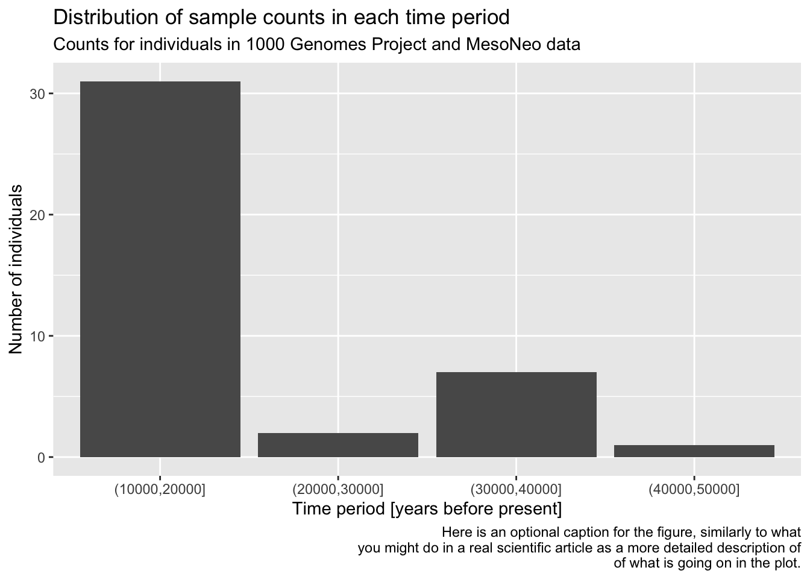
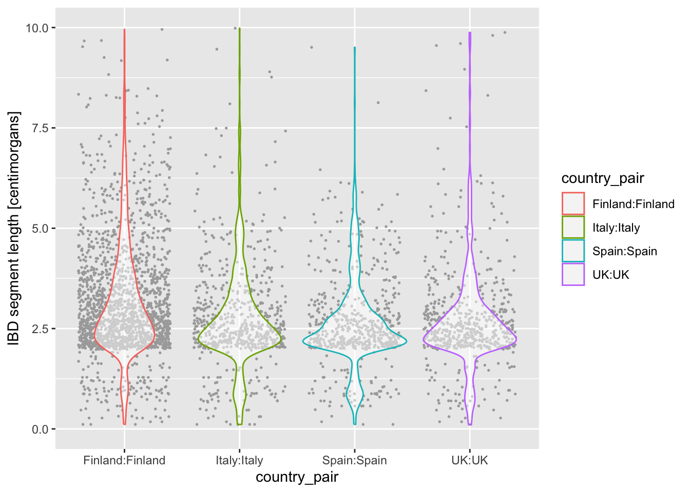
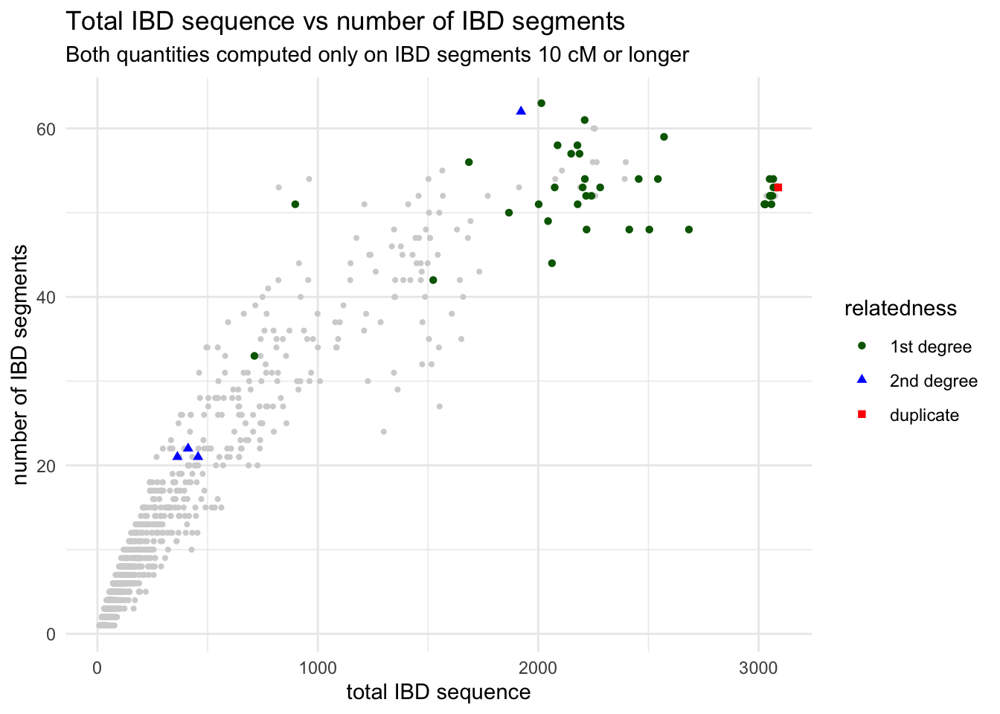

source("ibd_utils.R")
metadata <- process_metadata()
ibd_segments <- process_ibd(bin_step = 10000)
ibd_merged <- join_metadata(ibd_segments, metadata)Tidy data visualization
In this chapter, we will be delving into the data visualization R package called ggplot2, which is possibly the most famous piece of the tidyverse ecosystem. So much so that people who otherwise don’t use any tidyverse functions (or even who don’t even use R for data analysis itself) still use ggplot2 for making figures. It really is that good.
First, let’s start from a clean slate, and leverage our beautiful modularized pipeline. Create a new R script in RStudio, (File -> New file -> R Script) and save it somewhere on your computer as tidy-viz.R (File -> Save). Copy the following bit of code which will execute your IBD and metadata processing pipeline. The rest of this exercise will pick up with the analysis of your processed, filtered, and merged IBD data set.
Downloading and processing metadata...Downloading and processing IBD data...Joining IBD data and metadata...An important, powerful, and even elegant concept with building visualizations using ggplot2 is the idea of layering. Let’s start to introduce this from the simplest possible kind of visualization, which is plotting the counts of observations of a categorical (i.e. discrete) variable.
Exercise 1: Distribution of a categorical variable
Let’s start very simply, and introduce the layering aspect of ggplot2 visualization package step by step. Our data frame has a column age_bin, which contains the assignment of each individual into a respective time period. Let’s start by visualizing the count of individuals in each time bin.
geom_bar()
ggplot(metadata)
ggplot(metadata, aes(x = age_bin))
ggplot(metadata, aes(x = age_bin)) + geom_bar()
Let’s add more layers! Use a xlab() function to add an x-axis label element using the + operator.
Click to see the solution
Just as we did with tidyverse %>% data transformation pipelines, as a ggplot2 visualization pipeline gets more complex, it’s a good idea to introduce indentation so that each visualization steps is on its own line.
ggplot(metadata, aes(x = age_bin)) +
geom_bar() +
xlab("Time period [years before present]")
Now continue adding y-axis label with the ylab() function.
Click to see the solution
ggplot(metadata, aes(x = age_bin)) +
geom_bar() +
xlab("Time period [years before present]") +
ylab("Number of individuals")
Give your figure a proper main title using the function ggtitle().
Click to see the solution
ggplot(metadata, aes(x = age_bin)) +
geom_bar() +
xlab("Time period [years before present]") +
ylab("Number of individuals") +
ggtitle("Distribution of sample counts in each time period")
Although individual functions xlab(), ylab(), ggtitle() are useful, oftentimes it’s better to use a general function labs(). Look up its documentation under ?lab, then rewrite the code for your figure to use only this function, replacing your uses of xlab(), ylab(), and ggtitle() just with labs(). Note that the function has other useful arguments – go ahead and use as many of them as you want.
Note: Don’t worry about making your figure cluttered, this is just for practice. In a real paper, you wouldn’t use title or caption directly in a ggplot2 figure, but it’s definitely useful for work-in-progress reports at meetings, etc.
Click to see the solution
ggplot(metadata, aes(x = age_bin)) +
geom_bar() +
labs(
y = "Number of individuals",
x = "Time period [years before present]",
title = "Distribution of sample counts in each time period",
subtitle = "Counts for individuals in 1000 Genomes Project and MesoNeo data",
caption = "Here is an optional caption for the figure, similarly to what
you might do in a real scientific article as a more detailed description of
of what is going on in the plot."
)
You can see that the “present-day” bin completely overwhelms the number of individuals in the oldest bins. This often happens with data which follow a more or less exponential scale. A useful trick is adding a + scale_y_log() layer. You can probably guess what it does, so try adding it to your code!
Does the order of adding layers with the + operator matter? Do a little experiment to figure it out!
It’s useful to keep in mind that you can always pipe a data frame into a ggplot() function using the %>% operator, which always places that table as the first argument in the ggplot() call, where the function expects it. I.e., instead of writing ggplot(metadata, aes(...)), you can also do metadata %>% ggplot(aes(...)). This allows you to transform or summarize data before plotting, which makes the combination of tidyverse and ggplot2 infinitely stronger.
As a refresher and for a bit more practice, filter() the metadata first for individuals who are 10000 years or older, discarding the rest. Then pipe this filter() result into your ggplot() code, keeping the plotting part exactly the same.
Believe it or not, with this basic structure of ggplot2 visualization and combining this with any other type of tidyverse manipulation, filtering, and (as we’ll later see), summarization, you’re ready to make any figure imaginable. Let’s take this one step further.
Exercise 2: Distribution of a numerical variable
In the previous exercise you visualized a distribution of a categorical variable, specifically the counts of samples in an age category. Now let’s look at continuous variables and this time consider our ibd table if IBD segments between pairs of individuals:
tail(ibd_merged)# A tibble: 6 × 18
sample1 sample2 country_pair region_pair time_pair chrom start end rel
<chr> <chr> <chr> <chr> <chr> <dbl> <dbl> <dbl> <chr>
1 HG02814 NA19131 Gambia:Nigeria Africa:Africa present-… 21 6.95 9.47 none
2 VK167 VK337 UK:Sweden Europe:Europe (0,10000… 21 40.4 43.8 none
3 Ala1_C CT-01 USA:USA America:Amer… (0,10000… 21 18.8 21.1 none
4 VK238 NEO813 Faroes:France Europe:Europe (0,10000… 21 13.1 13.8 none
5 VK39 HG00282 Sweden:Finland Europe:Europe (0,10000… 21 4.80 9.47 none
6 NEO181 NEO932 Russia:Denmark Europe:Europe (0,10000… 21 52.8 55.7 none
# ℹ 9 more variables: length <dbl>, country1 <chr>, continent1 <chr>,
# age1 <dbl>, age_bin1 <fct>, country2 <chr>, continent2 <chr>, age2 <dbl>,
# age_bin2 <fct>The most interesting quantity we might want to analyse in the IBD context is the length of IBD segments, which can indicate the degree of genetic affinity or relatedness between individuals. So let’s take a look at the distribution of IBD lengths across our data set as an opportunity to introduce new functionality and useful tricks of ggplot2.
geom_histogram() and geom_density()
You can visualize a distribution of values using the functions geom_histogram() and geom_density(). Both are useful for similar things, each has its strengths and weaknesses from a visualization perspective.
Visualize the distribution of length values across all individuals in your IBD data set, starting with the basic simple patterns of:
ggplot() + geom_histogram(), orggplot() + geom_density(),
just like you did in the previous geom_bar() example. Of course, you have to fill in the aes() accordingly. Try to use the knowledge you obtained in the previous exercise! As a reminder, the length is expressed in units of centimorgans, so add immediately an x-axis label clarifying the units to anyone looking at your figure, either using xlab() or labs(x = ...).
To make our data exploration a little easier at the beginning, let’s create a new variable ibd_eur from the total ibd data, with the following transformations:
filter()forregion_pair == "Europe:Europe"filter()fortime_pair == "present-day:present-day"
Save the result of both filtering steps as ibd_eur, and feel free to use the %>% pipeline concept that you learned about previously.
Now visualize the distribution of lengths in the reduced, Europe-only IBD data set stored in the ibd_eur variable. Do this in two versions again, using geom_histogram() or geom_density(). Additionally, for each of the two functions specify either fill or color (or both of them!) based on the variable country_pair. Experiment with the looks of the result and find your favourite (prettiest, cleanest, easiest to interpret, etc.).
How do you compare these different approaches? When does one seems more appropriate than other?
Click to see the solution
- Histogram version with
fillset (I personally don’t find thecolorversion of histograms useful at all so I’m not showing it here):
ibd_eur %>%
ggplot(aes(length, fill = country_pair)) +
geom_histogram() +
labs(x = "IBD segment length [centimorgans]")`stat_bin()` using `bins = 30`. Pick better value with `binwidth`.
- Density versions:
- using
coloronly:
ibd_eur %>%
ggplot(aes(length, color = country_pair)) +
geom_density() +
labs(x = "IBD segment length [centimorgans]")- using
fill, which also requires setting thealphatransparency to avoid accidentally hiding some peaks:
ibd_eur %>%
ggplot(aes(length, fill = country_pair, color = country_pair)) +
geom_density(alpha = 0.5) +
labs(x = "IBD segment length [centimorgans]")
Limiting axis scales
Above, we clearly have some individual pairs which share a huge amount of IBD. We’ll quantify how much a bit later, but for now, the x-axis appears in the density plot is too spread out. This happens often in visualizing numerical variables. Use these two additional layers to improve the readability of your figures by restricting the range of the x-axis of your figures:
- Add this layer
+ xlim(0, 10)to your figure, - or this layer
+ coord_cartesian(xlim = c(0, 10)).
What’s the difference between both possibilities?
Click to see the solution
Here are the two versions of restricting the x-axis scale. Note that they differ only by the command used at the 5th line!
coord_cartesian()performs so-called “soft clipping” – it restricts the “viewpoint” on the entire data set:
ibd_eur %>%
ggplot(aes(length, color = country_pair)) +
geom_density() +
labs(x = "IBD segment length [centimorgans]") +
coord_cartesian(xlim = c(0, 10))
xlim()does “hard clipping” – it effectively removes the points outside of the given range. This usually isn’t what we want, so I personally rarely if ever use this:
ibd_eur %>%
ggplot(aes(length, color = country_pair)) +
geom_density() +
labs(x = "IBD segment length [centimorgans]") +
xlim(0, 10)Warning: Removed 23 rows containing non-finite outside the scale range
(`stat_density()`).Admittedly they both give the same result, but that’s not always the case, so be careful!
Is there evidence of some countries sharing more IBD sequence within themselves. If that’s the case, it could be a result of a stronger population bottleneck. The previous density plot is a little too busy to be able to see this, so filter your ibd_eur table for rows in which country1 is the same as country2, and then %>% pipe it into the usual ggplot2 density command.
Click to see the solution
ibd_eur %>%
filter(country1 == country2) %>%
ggplot(aes(length, color = country_pair)) +
geom_density() +
labs(x = "IBD segment length [centimorgans]") +
xlim(0, 10)Warning: Removed 23 rows containing non-finite outside the scale range
(`stat_density()`).
It looks like there are more IBD sequence shared within Finland, which is consistent with a previously established hypothesis that ancestors of present-day Finns experienced a strong popularion bottleneck.
Let’s introduce another useful geom for visualization of this type of numerical data, the boxplot! You can visualize boxplots with the function geom_boxplot(), and calling (in our case right here) aes(x = country_pair, y = length, color = country) within the ggplot() function. Adjust your previous density example according to these instructions to show boxplots instead!
When you have your boxplots, swap out geom_boxplot() for geom_violin().
Note: Hopefully you can see now how super modular and customizable ggplot2 for making many different types of visualizations!
Click to see the solution
ibd_eur %>%
filter(country1 == country2) %>%
ggplot(aes(x = country_pair, y = length, color = country_pair)) +
geom_boxplot() +
labs(y = "IBD segment length [centimorgans]") +
ylim(0, 10)Warning: Removed 23 rows containing non-finite outside the scale range
(`stat_boxplot()`).
ibd_eur %>%
filter(country1 == country2) %>%
ggplot(aes(x = country_pair, y = length, color = country_pair)) +
geom_violin() +
labs(y = "IBD segment length [centimorgans]") +
ylim(0, 10)Warning: Removed 23 rows containing non-finite outside the scale range
(`stat_ydensity()`).
I’m personally a much bigger fan of the violin plot for this kind of purpose, because I feel like boxplot hides too much about the distribution of the data.
On that note, another useful trick we haven’t mentioned yet is that we can plot multiple geoms from the same data! You’re already quite familiar with the ggplot2 concept of layering functions on top of each other using the + operator. What happens when you add + geom_jitter(size = 0.3, color = "darkgray") after the line with geom_violin()? How do you read the resulting figure?
Note: We specified color = "darkgray", which effectively overrides the color = country_pair assigned in the ggplot() call (and which normally sets the color for every single geom we would add to our figure).
What do you think happens when you exchange the order of geom_violin() and geom_jitter(...) in your previous solution? Why does the order matter?
Exercise 3: Relationship between two variables
geom_point()
We’ll now look at creating another type of visualization which is extremely useful and very common: a scatter plot!
But first, let’s do some more data summarization so that we can demonstrate building of scatter plots using ggplot2. At this point, this should all be a piece of cake for you!
The previous figures showed distributions of individual segment lengths on present-day individuals only. Another useful quantity is the number of segments shared between a pair of individuals and the total number of IBD sequence between those pairs.
Practice your knowledge of group_by() and summarize() and apply them to our huge ibd_segments table, to achieve the following:
Start with our original big IBD table
ibd_segments(not the smalleribd_eur!)filter()for rows in whichregion_pair == "Europe:Europe"(only pairs within Europe, just as we did before),filter()for rows in whichlength > 10(only long IBD segments)filter()for rows in whichage_bin1 == age_bin2(only individuals from the same age bin),group_by()to create groupings based onsample1,sample2,country_pair,region_pair, andtime_pair,summarize()to create two new quantitiesn_ibd = n()andtotal_ibd = sum(length)(total number of long IBD segments and their total sequence for each of individuals).
Save the result of your %>% pipeline implementing the steps 1.-3. above in a variable ibd_sum.
Your work so far has been based on a small subset of the overall IBD data, just for chromosome 21. To move to more complex and interesting visualization, execute this command which reads the ibd_long just like you created it yourself, except based on all chromosomes in the entire genome. We’ll be working on that from now on.
ibd_sum <- read_tsv("http://tinyurl.com/simgen-ibd-sum")Rows: 15119 Columns: 9
── Column specification ────────────────────────────────────────────────────────
Delimiter: "\t"
chr (7): sample1, sample2, rel, country_pair, region_pair, time_pair, distance
dbl (2): n_ibd, total_ibd
ℹ Use `spec()` to retrieve the full column specification for this data.
ℹ Specify the column types or set `show_col_types = FALSE` to quiet this message.With our summarized table ibd_sum ready, we’re ready to create our scatter plot. When we worked with geom_histogram(), geom_density(), and geom_bar(), we only needed to do something like this:
df %>%
ggplot(aes(x = COLUMN_NAME)) +
geom_FUNCTION()Because scatter plot is two-dimensional, we have to specify not only the x but also the y in the aes() aesthetic mapping… and with that bit of information, I think you already know how to do this based on your knowledge of basic ggplot2 techniques introduced above!
Use the function geom_point() to visualize the scatter plot of x = total_ibd against y = n_ibd. We know that related individuals share a large amounts of IBD sequence between each other. As a reminder, the entire human genome spans about 3000 centimorgans. Can you guess from your figure which pairs of individuals (a point on your figure representing one such pair) could be potentially closely related?
Note: Don’t worry about this too much, just take a guess. Below we’ll look at this question more closely.
Click to see the solution
It looks like some pairs of individuals share almost their entire genome in IBD, around the whole 3 gigabases of sequence!
We’ll work on clarifying that below.
ibd_sum %>%
ggplot(aes(x = total_ibd, y = n_ibd)) +
geom_point()
From the introduction of histograms and densities, you’re already familiar with modifying the aes() aesthetic of a geom layer using the color argument of aes(). Right now your dots are all black, which isn’t super informative. Luckily, you’re IBD table has a “mysterious” column called rel. What happens when you color points based on the values in this column inside the aes() function (i.e., set color = rel)? Similarly, what happens when you set shape = rel?
Look at a figure from this huge study of IBD patterns and their relationship to the degree of relatedness between individuals? This is completely independent data set and independent analysis, but do you see similarities between this paper and your figure?
Click to see the solution
ibd_sum %>%
ggplot(aes(x = total_ibd, y = n_ibd, color = rel)) +
geom_point()
I have to say I kind of hate that “none” (basically an baseline background) is given a striking purple. I woudln’t want that in my paper, and we will show a potential solution to this soon! For now, let’s keep going.
We’re approching something which isn’t far from a publication quality figure. To get even closer, use the + labs() layer function to properly annotate your x and y axes, and give your figure a nice title too.
Click to see the solution
ibd_sum %>%
ggplot(aes(x = total_ibd, y = n_ibd, color = rel)) +
geom_point() +
labs(x = "total IBD sequence", y = "number of IBD segments",
title = "Total IBD sequence vs number of IBD segments",
subtitle = "Both quantities computed only on IBD segments 10 cM or longer")
Exercise 4: Multiple data sets in one plot
So far we’ve always followed this pattern of ggplot2 usage, to borrow our very first geom_histogram() example just for the sake of explanation:
ggplot(ibd_segments, aes(length)) +
geom_histogram()`stat_bin()` using `bins = 30`. Pick better value with `binwidth`.
However, you can also do this and it will give the same result (try it!):
ggplot() +
geom_histogram(data = ibd_segments, aes(length))`stat_bin()` using `bins = 30`. Pick better value with `binwidth`.In other words, each geom_<...>() function accepts both data data frame and also its own aes() aesthetic and mapping function. You could think of this as each individual geom having a “self-contained” ggplot() function’s ability.
This can be very useful whenever we want to plot different aspects of the data with their own aesthetic parameters (colors, shapes, sizes). Let’s work through an exercise to explain this better, step by step, to make our IBD scatter plot figure much more nicer to look at.
Above I complained a little bit how the “none” related data points are given just as strikingly colorful points as data points of interest. What we want to establish is different visual treatments of different kinds of data. Here’s one solution to do this (which will also demonstrate a very very useful ggplot2 trick).
First, take your ibd_sum_total table and create two versions of it using filter() like this:
ibd_unrel <- filter(ibd_sum, rel == "none")ibd_rel <- filter(ibd_sum, rel != "none")
The first table contains only those pairs of individuals with missing information about relatedness, the second one contains only those rows with this information present.
Print out the ibd_unrel and ibd_rel tables to make sure they both contain the same columns, even though they have different rows.
Then visualize the ibd_unrel (IBD summaries between unrelated individuals) table with the following “template”.
Note: The ggplot() has no arguments! Everything is in the geom_point() call!
ggplot() +
geom_point(data = <DATA FRAME>, aes(<ADD WHAT IS NEEDED>), color = "lightgray")
Click to see the solution
ggplot() +
geom_point(data = ibd_unrel, aes(x = n_ibd, y = total_ibd), color = "lightgray")
Now visualize the scatter plot of pairs of individuals which are known to be related, ibd_rel, so something looking like this:
ggplot() +
geom_point(data = <DATA FRAME>, aes(<ADD WHAT IS NEEDED>, color = rel)) +
Click to see the solution
ggplot() +
geom_point(data = ibd_rel, aes(x = n_ibd, y = total_ibd, color = rel))
You have now plotted the two scatter plots separately, but here comes a very cool aspect of ggplot2 I wanted to show you. You can combine the two figures, each plotting a different data frame, into one! Do this now and to make the figure even nicer (and even publication ready!), add proper x and y labels, overall plot title as well as subtitle (all using the labs() layer functions) as well as adjust the legend title (just like you did with the guides() layer function above).
As a bonus, and to learn another parameter of aes() useful for scatter plots, in addition to setting color = rel (which sets a color of each point based on the relatedness value), add also shape = rel! Observe what happens when you do this!
Similarly, in the geom_point() command plotting unrelated individuals, in addition to setting color = "lightgray", set also size = 0.75.
I’m not personally fan of the default grey-filled background of ggplots. I like to add + theme_minimal() at the end of my plotting code of many of my figures, particularly when I’m creating visualizations for my papers. Try it too!
Hint: If it still isn’t clear, don’t worry. Here’s a bit of help of what your plotting code should look like:
ggplot() +
geom_point(<YOUR CODE PLOTTING UNRELATED IBD PAIRS>)
geom_point(<YOUR CODE PLOTTING RELATED IBD PAIRS>) +
labs(<x, y, title, and subtitle text>) +
guides(color = guide_legend("relatedness"), shape = guide_legend("relatedness)) +
theme_minimal()
Click to see the solution
Here’s the complete solution to this exercise:
ibd_unrel <- filter(ibd_sum, rel == "none")
ibd_rel <- filter(ibd_sum, rel != "none")
ggplot() +
geom_point(data = ibd_unrel, aes(x = total_ibd, y = n_ibd), color = "lightgray", size = 0.75) +
geom_point(data = ibd_rel, aes(x = total_ibd, y = n_ibd, color = rel, shape = rel)) +
labs(
x = "total IBD sequence",
y = "number of IBD segments",
title = "Total IBD sequence vs number of IBD segments",
subtitle = "Both quantities computed only on IBD segments 10 cM or longer"
) +
guides(
color = guide_legend(title = "relatedness"),
shape = guide_legend(title = "relatedness")
) +
theme_minimal()
Exercise 4: Categories in facets (panels)
Let’s talk about dimensionality (i.e., the number of variables) in our data sets and about the ways we can represent them. This topic boils down to the question of “How many dimensions of our data can we represent in a single figure and be it as comprehensible as possible?”
So far we’ve managed to visualize a rather complex data set, which features, for pairs of two individuals:
- the total amount of IBD sequence
total_ibd(plotted on the x axis) - the number of IBD segments
n_ibd(plotted on the y axis) - the degree of relatedness
rel(plotted as colors and shapes)
Just look at this figure again – this could easily be a main figure in a final scientific publication and we only needed a few lines of nicely readable code!
Now looking at the data again, we see additional variables (data dimensions). What if we want to visualize the time_pair variable, and observe the patterns of IBD sharing across time? We have run out of possibilities of visualizing them using the means that we have available(x and y dimensions, color and shape). The answer can be facetting.
head(ibd_sum)# A tibble: 6 × 9
sample1 sample2 rel country_pair region_pair time_pair distance n_ibd
<chr> <chr> <chr> <chr> <chr> <chr> <chr> <dbl>
1 0LS10 NEO224 none Estonia:Sweden Europe:Europe (2500,5000… 0.01304… 1
2 0LS10 V10 none Estonia:Estonia Europe:Europe (2500,5000… 0 1
3 0LS10 V14 none Estonia:Estonia Europe:Europe (2500,5000… 0.00103… 1
4 0LS10 VII4 none Estonia:Estonia Europe:Europe (2500,5000… 6.80661… 1
5 0LS10 X10 none Estonia:Estonia Europe:Europe (2500,5000… 0.00102… 1
6 0LS11 V16 none Estonia:Estonia Europe:Europe (2500,5000… 2.30217… 8
# ℹ 1 more variable: total_ibd <dbl>Faceting is easier to demonstrate than explain, so just go ahead, take your publication-quality scatter plot figure and add + facet_wrap(~ time_pair) at the end of your code chunk. What do you see? How do you interpret the result?
Combining figures
TODO: Logscale vs normal scale
So, here’s an extremely cool revelation. Do you remember how we went through various data types and object classes in the R bootcamp? Numeric, logical, character types, etc?
ggplot() functions actually do return a (hidden) value, which is a normal object like any other R value! The fact that we immediately see a plot visualized is “just” a side effect that R provides for convenience! After all, when we write plotting code, we usually want to see the plot, right?
What does this mean? Well, first of all, consider this bit of code:
p1 <- ggplot()Weird, huh? Why would you do that? When you type p1 in your R console you get the usual (empty) figure!
p1
Of course, we can also create (and save in a variable) a full figure like this:
p1 <- ggplot(ibd_segments, aes(length)) + geom_histogram()
p1`stat_bin()` using `bins = 30`. Pick better value with `binwidth`.
We could also create and save another figure, this time a density:
p2 <- ggplot(ibd_segments, aes(length)) + geom_density()
p2
This is extremely useful for making composite figures built out of individual panels (like you often see in scientific figures as panels A, B, C, etc.). The way we can do this is using a helper R package cowplot (don’t ask me about its name, I have no idea! :)) and its function plot_gri(). Check this out:
library(cowplot)
plot_grid(p1, p2, labels = c("A", "B"))`stat_bin()` using `bins = 30`. Pick better value with `binwidth`.
This is an extremely useful pattern because it basically eliminates the need for manually pasting figures in a graphics editor (which defies the purpose of reproducibility!). The sky is actually a limit, because you can place other plot_grid() calls within another plot_grid(), composing figures of various levels of complexity. Check out a figure from one of my papers, each panel is an independently made ggplot2 figure, all pasted together with plot_grid().
For instance, if we make p3 like this:
# create a silly scatter plot of geographical coordinates of our samples
# (do you see an outline of Europe? :))
p3 <-
metadata %>%
filter(continent == "Europe") %>%
ggplot(aes(longitude, latitude)) +
geom_point()
p3Warning: Removed 405 rows containing missing values or values outside the scale range
(`geom_point()`).
You could combine them like this (this is just an example, don’t read too much into the meaning of putting these particular plots together).
plot_grid(
p3,
plot_grid(p1, p2, labels = c("B", "C")),
nrow = 2,
labels = "A"
)`stat_bin()` using `bins = 30`. Pick better value with `binwidth`.Warning: Removed 405 rows containing missing values or values outside the scale range
(`geom_point()`).
ibd_sum %>%
filter(region_pair == "Europe:Europe") %>%
ggplot(aes(time_pair, total_ibd)) +
geom_violin() +
theme(axis.text.x = element_text(hjust = 1, angle = 45))Warning: Groups with fewer than two datapoints have been dropped.
ℹ Set `drop = FALSE` to consider such groups for position adjustment purposes.
Bonus exercises
Further practice
Option 1: Your own data
I’m sure you have done some form of table munging and data visualization in your projects. If you’re done with the exercises above, here are some ideas for you:
- If you haven’t used R for processing of tabular data in your work – maybe you have done similar table munging in Excel or Google Sheets in a manual (i.e., non-reproducible) way? – write your processing steps as a self-contained R script:
- If you used Excel, you can use the R package readxl,
- If you used Google Sheets, you can use the R package googlesheets4
- If you used Excel or base R for plotting figures, use what you learned about ggplot2 to make beautiful, publication-ready plots as we did in our exercises.
Yes, this will put you in an uncharted territory. This is scary and totally normal when doing research. I’m happy to help you out with questions and issues!
Option 2: Star Wars characters
If you need a break from population genetics and biology and would still like to practice your tidyverse and ggplot2 skills, here’s a fun data set for you with various metadata about Star Wars characters, with a list of questions you can try answering. Every single question can be answered using the tools you’ve already encountered here!
library(dplyr)
starwars# A tibble: 87 × 14
name height mass hair_color skin_color eye_color birth_year sex gender
<chr> <int> <dbl> <chr> <chr> <chr> <dbl> <chr> <chr>
1 Luke Sk… 172 77 blond fair blue 19 male mascu…
2 C-3PO 167 75 <NA> gold yellow 112 none mascu…
3 R2-D2 96 32 <NA> white, bl… red 33 none mascu…
4 Darth V… 202 136 none white yellow 41.9 male mascu…
5 Leia Or… 150 49 brown light brown 19 fema… femin…
6 Owen La… 178 120 brown, gr… light blue 52 male mascu…
7 Beru Wh… 165 75 brown light blue 47 fema… femin…
8 R5-D4 97 32 <NA> white, red red NA none mascu…
9 Biggs D… 183 84 black light brown 24 male mascu…
10 Obi-Wan… 182 77 auburn, w… fair blue-gray 57 male mascu…
# ℹ 77 more rows
# ℹ 5 more variables: homeworld <chr>, species <chr>, films <list>,
# vehicles <list>, starships <list>- What is the distribution of counts of sexes of the characters?
- What is the distribution of counts of genders of the characters?
- Who is the oldest character?
- Who is youngest?
- What’s the most frequently featured homeworld planet?
- What is the weight of Jar Jar Binks?
Click to see the solution
This is way too many questions to provide solutions too with extensive comments. Luckily, you should be able to guess which code answers which question in which way, so just experiment!
ggplot(starwars, aes(sex)) + geom_bar()
ggplot(starwars, aes(gender)) + geom_bar()ggplot(starwars, aes(height)) + geom_histogram()`stat_bin()` using `bins = 30`. Pick better value with `binwidth`.Warning: Removed 6 rows containing non-finite outside the scale range
(`stat_bin()`).
ggplot(starwars, aes(mass)) + geom_histogram()`stat_bin()` using `bins = 30`. Pick better value with `binwidth`.Warning: Removed 28 rows containing non-finite outside the scale range
(`stat_bin()`).
There’s a clear massive (literally) outlier. Is this a data-entry error, or could it possibly be this guy?
filter(starwars, mass > 1000)# A tibble: 1 × 14
name height mass hair_color skin_color eye_color birth_year sex gender
<chr> <int> <dbl> <chr> <chr> <chr> <dbl> <chr> <chr>
1 Jabba De… 175 1358 <NA> green-tan… orange 600 herm… mascu…
# ℹ 5 more variables: homeworld <chr>, species <chr>, films <list>,
# vehicles <list>, starships <list>Jabba ruins everything, so let’s cap the mass scale so that we can see some patterns:
starwars %>%
filter(!is.na(gender)) %>%
ggplot(aes(gender, mass, fill = gender)) +
geom_boxplot(outlier.shape = NA) +
geom_jitter() +
coord_cartesian(ylim = c(0, 250))Warning: Removed 27 rows containing non-finite outside the scale range
(`stat_boxplot()`).Warning: Removed 27 rows containing missing values or values outside the scale range
(`geom_point()`).
starwars %>%
filter(!is.na(sex)) %>%
ggplot(aes(sex, mass, fill = sex)) +
geom_boxplot(outlier.shape = NA) +
geom_jitter() +
coord_cartesian(ylim = c(0, 250))Warning: Removed 27 rows containing non-finite outside the scale range
(`stat_boxplot()`).Warning: Removed 27 rows containing missing values or values outside the scale range
(`geom_point()`).
ggplot(starwars, aes(mass, height)) + geom_point()Warning: Removed 28 rows containing missing values or values outside the scale range
(`geom_point()`).
ggplot(starwars, aes(mass, height)) +
geom_point() +
coord_cartesian(xlim = c(0, 250))Warning: Removed 28 rows containing missing values or values outside the scale range
(`geom_point()`).
ggplot(starwars, aes(mass, height)) +
geom_point() +
geom_smooth(method = "lm") +
coord_cartesian(xlim = c(0, 250))`geom_smooth()` using formula = 'y ~ x'Warning: Removed 28 rows containing non-finite outside the scale range
(`stat_smooth()`).Warning: Removed 28 rows containing missing values or values outside the scale range
(`geom_point()`).
ggplot(starwars, aes(mass, height)) +
geom_point() +
geom_smooth(method = "lm") +
xlim(c(0, 250))`geom_smooth()` using formula = 'y ~ x'Warning: Removed 29 rows containing non-finite outside the scale range
(`stat_smooth()`).Warning: Removed 29 rows containing missing values or values outside the scale range
(`geom_point()`).
# coord_cartesian(xlim = c(0, 250))